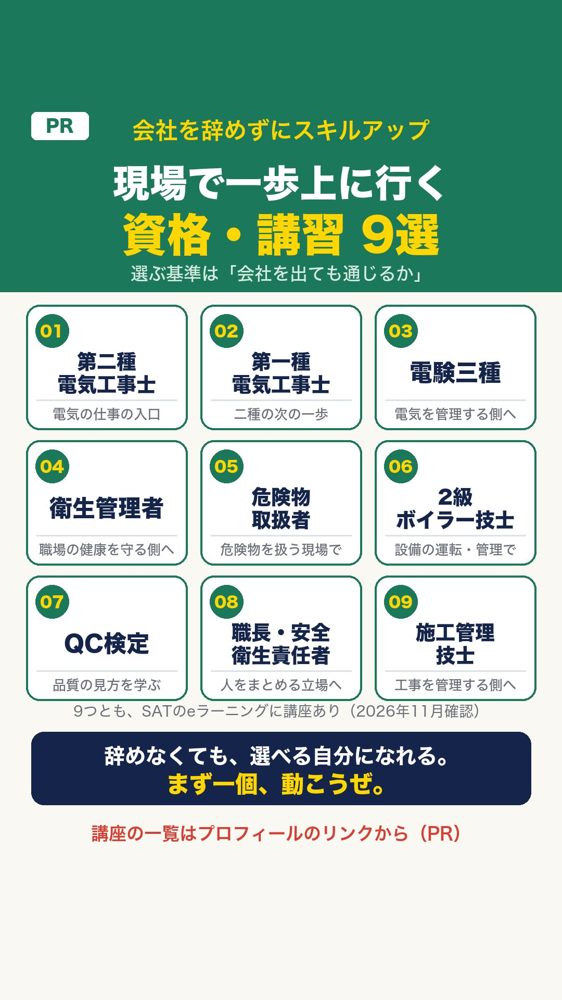

会社を辞めずにスキルアップ（PR）
転職しなくても、資格や講習で「今の現場で一歩上」を目指す道もあります。選ぶ基準は「会社を出ても通じるか」。

現場・技術系の資格に特化したeラーニング「SAT」には、電気工事士・電験三種・衛生管理者・危険物・ボイラー・QC検定・施工管理技士・職長教育などの講座があります。
SATの講座一覧を見る（PR）講座の中身・値段はSAT公式サイトで確認してください（2026年11月13日に講座一覧を確認）。てつ先輩は第一種衛生管理者などを持っていますが、SATで受講したことはありません。
会社員を続けてもいい。辞めてもいい。
選べることが大事。
Instagram・Threads：@tetsusenpai_genba